Laboratorio de Histopatología
Título de la presentación
Subtítulo · Expositor · Fecha
Agenda
- Punto uno
- Punto dos
- Punto tres
Sección de contenido
Cuerpo en Inter, titulares en Manrope.
Todo hereda los colores de marca desde los tokens.
Frase de impacto
con degradado de marca

Gracias
contacto@citolab.cl · www.citolab.cl